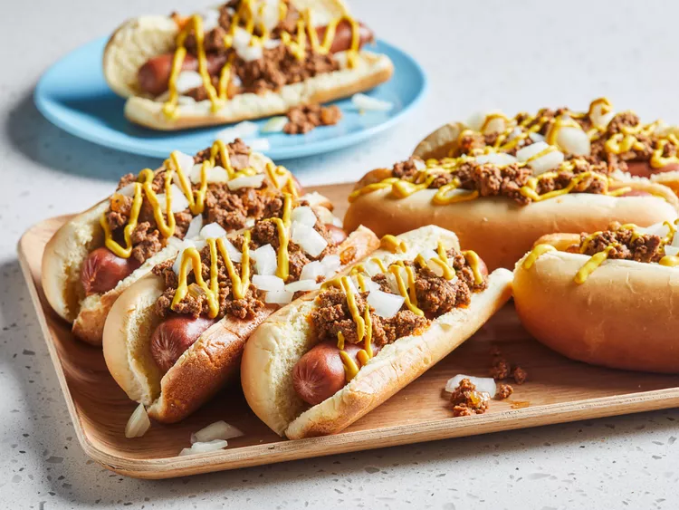

The story of how the Coney Island hot dog got to the Midwest is pretty straightforward,
but no one really knows exactly how the wiener first came to be topped with what is basically a hot meat relish.
I have no idea how authentic this is and have never been to Detroit or even Flint. I have had Nathan's version,
which I enjoyed, but the word on the street is that it's not nearly as good as the relatives it spawned.
- 1 ½ pounds lean ground beef
- 2 cups water, or as needed
- ¾ cup diced onion, divided
- ⅓ cup ketchup
- 2 tablespoons butter
- 2 cloves garlic, crushed
- 2 tablespoons chili powder, or more to taste
- 1 ½ teaspoons salt, or to taste
- 1 teaspoon freshly ground black pepper, or to taste
- 1 teaspoon ground cumin, or to taste
- ½ teaspoon celery salt, or to taste
- 1 pinch cayenne pepper, or to taste
- 8 all-beef hot dogs
- 8 hot dog buns
- ¼ cup prepared yellow mustard, or to taste
-
Gather all ingredients.
-
Combine ground beef, water, 1/2 cup diced onion, ketchup, butter, garlic,
chili powder, salt, black pepper, cumin, celery salt, and cayenne pepper together in a pot.
Mix with a potato masher or spatula over medium-high heat until mixture has a finely ground consistency and begins to bubble, about 10 minutes.
-
Bring beef mixture to a simmer,
reduce heat to medium-low, and cook, stirring occasionally,
until sauce thickens and reduces, about 1 hour. Season with salt and pepper to taste.
-
Bring a large pot of water to a boil. Cook hot dogs in boiling water until heated through, 5 to 7 minutes.
-
Preheat the oven to 350 degrees F (175 degrees C). Arrange hot dog buns on a baking sheet.
Cook buns in the preheated oven until soft and warm, 2 to 3 minutes.
-
Place 1 bun on a plate. Place a hot dog in the bun and top with meat sauce.
Drizzle yellow mustard and a portion of remaining diced onion over the meat sauce.
Repeat with remaining hot dogs.
-
Enjoy!